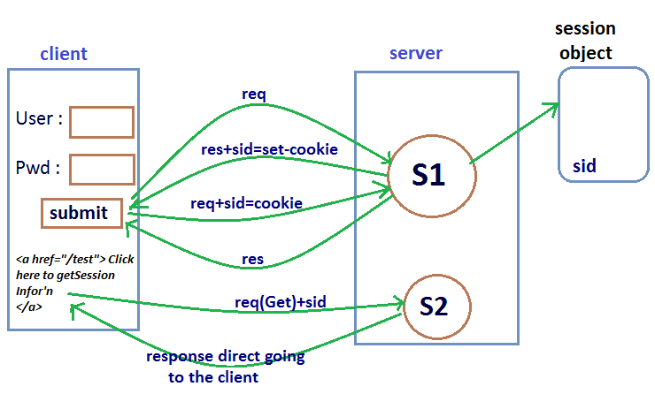
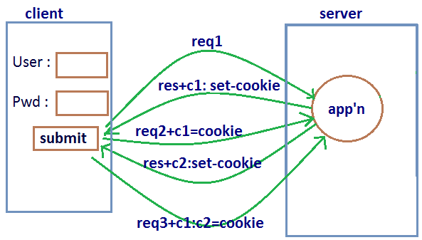
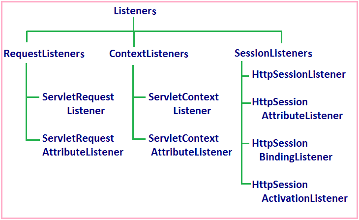
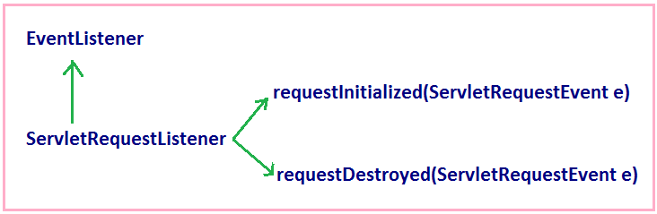
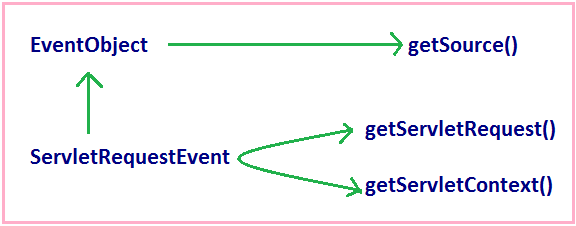
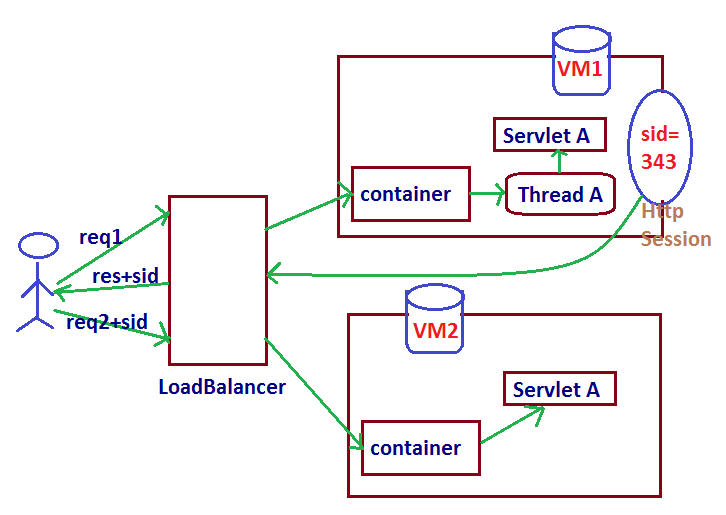
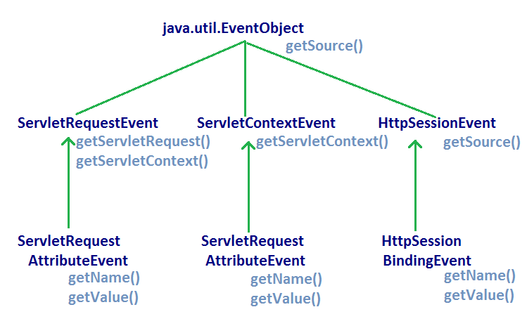

Session ManagementAgenda:Objective:
1.Session-API :
Creation of Session object :HttpServletRequest interface defines the following methods for the creation of Session object.
Which of the two statements are equal ?
Invalidating a Session :We can invalidate a Session by using the following 2 ways
1.invalidate( ) :HttpSession interface contains invalidate( ) to invalidate a Session explicitly.
Ex: session.invalidate( ) LogoutServlet.java
public class LogoutServlet extends HttpServlet {
public void doGet(HttpServletRequest request, HttpServletResponse response)
throws ServletException, IOException {
response.setContentType("text/html");
PrintWriter out = response.getWriter();
HttpSession session=request.getSession(false);
if(session!=null)
session.invalidate();
else
out.println("No session is invalidate()");
}
}
web.xml
<servlet> <servlet-name>LogoutServlet</servlet-name> <servlet-class>session.LogoutServlet</servlet-class> </servlet> <servlet-mapping> <servlet-name>LogoutServlet</servlet-name> <url-pattern>/logout</url-pattern> </servlet-mapping> 2.By Session timeout mechanism :
Comparision between two Session timeout mechanism :
Important Methods of HttpSession :
Methods in HttpSession to perform Attribute Management in Session Scope :
HttpSession session=reqest.getSession(); session.invalidate(); ------------------- session.isNew(); //java.lang.IllegalStateException ------------------- out.println(session.getServletContext()); //valid Ex: Demo program for Session Management by session APIlogin.html<form action="./sessionone"> <table> <tr><td>Name :</td><td> <input type="text" name="uname"></td></tr> <tr><td>Value : </td><td> <input type="text" name="value"></td></tr> <tr><td><input type="submit" value="submit"></td></tr> </table> </form> <a href="./sessiontwo">Session Information</a>SessionServletOne.java
public class SessionServletOne extends HttpServlet {
public void doGet(HttpServletRequest request, HttpServletResponse response)
throws ServletException, IOException {
response.setContentType("text/html");
PrintWriter out = response.getWriter();
String name=request.getParameter("uname");
String value=request.getParameter("value");
HttpSession session=request.getSession();
if(session.isNew()) {
out.println("New Session got created "+session.getId());
}
else {
out.println("With existing Session id : "+session.getId());
}
session.setAttribute(name, value);
session.setMaxInactiveInterval(120);
RequestDispatcher rd=request.getRequestDispatcher("login.html");
rd.include(request, response);
}
}
SessionServletTwo.java
public class SessionServletTwo extends HttpServlet {
public void doGet(HttpServletRequest request, HttpServletResponse response)
throws ServletException, IOException {
response.setContentType("text/html");
PrintWriter out = response.getWriter();
HttpSession session=request.getSession(false);
if(session==null) {
out.println("No Session id associated with request ");
}
else {
Enumeration e=session.getAttributeNames();
out.println("<table border=3><tr><th>Session Attribute Name</th>
<th>Session Attribute Value</th></tr>");
while(e.hasMoreElements()){
String name=(String) e.nextElement();
String value=(String) session.getAttribute(name);
out.println("<tr><td>"+name+"</td>
<td>"+value+"</td></tr>");
}
out.println("</table>");
out.println("<br>The Session creation Time is :"+
new Date(session.getCreationTime()));
out.println("<br>The session last accessed time is :"+
new Date(session.getLastAccessedTime()));
out.println("<br>The Session max inactvate interval is :"+
session.getMaxInactiveInterval());
}
out.println("<br><a href=login.html> login page </a>");
}
}
web.xml
<web-app>
<servlet>
<servlet-name>SessionServletOne</servlet-name>
<servlet-class>session.SessionServletOne</servlet-class>
</servlet>
<servlet>
<servlet-name>SessionServletTwo</servlet-name>
<servlet-class>session.SessionServletTwo</servlet-class>
</servlet>
<servlet-mapping>
<servlet-name>SessionServletOne</servlet-name>
<url-pattern>/sessionone</url-pattern>
</servlet-mapping>
<servlet-mapping>
<servlet-name>SessionServletTwo</servlet-name>
<url-pattern>/sessiontwo</url-pattern>
</servlet-mapping>
<session-config>
<session-timeout>1</session-timeout>
</session-config>
</web-app>
Exchanging Session Id between Client and Server :
Session id will be stored as per application in the client side.
Ex: Note:(Bank locker ):
Cookies :
Important methods of Cookie class :
Demo Program for session management by cookieslogin.html<form action="./cookieone"> <table> <tr><td>Name :</td><td> <input type="text" name="uname"></td></tr> <tr><td>Value : </td><td> <input type="text" name="value"></td></tr> <tr><td><input type="submit" value="submit"></td></tr> </table> </form> <a href="./cookietwo">Cookie Information</a>CookieServletOne.java
public class CookieServletOne extends HttpServlet {
public void doGet(HttpServletRequest request, HttpServletResponse response)
throws ServletException, IOException {
response.setContentType("text/html");
PrintWriter out = response.getWriter();
String name=request.getParameter("uname");
String value=request.getParameter("value");
Cookie c=new Cookie(name, value);
c.setMaxAge(120);
response.addCookie(c);
out.println("Cookie added Successfully");
out.println("domain"+c.getDomain());
out.println("comment"+c.getComment());
out.println("maxage"+c.getMaxAge());
out.println("version"+c.getVersion());
out.println("hashcode"+c.hashCode());
RequestDispatcher rd=request.getRequestDispatcher("login.html");
rd.include(request, response);
}
}
CookieServletTwo.java
public class CookieServletTwo extends HttpServlet {
public void doGet(HttpServletRequest request, HttpServletResponse response)
throws ServletException, IOException {
response.setContentType("text/html");
PrintWriter out = response.getWriter();
Cookie[] c=request.getCookies();
if(c==null){
out.println("No cookies associated with this request");
}
else {
out.println("<table border=3><tr><th>Cookie Name</th>
<th>Cookie Value</th></tr>");
for(Cookie c1:c){
String name=c1.getName();
String value=c1.getValue();
out.println("<tr><td>"+name+"</td><td>"+value+"</td></tr>");
}
out.println("</table>");
}
}
}
web.xml
<web-app>
<servlet>
<servlet-name>CookieServletOne</servlet-name>
<servlet-class>session.CookieServletOne</servlet-class>
</servlet>
<servlet>
<servlet-name>CookieServletTwo</servlet-name>
<servlet-class>session.CookieServletTwo</servlet-class>
</servlet>
<servlet-mapping>
<servlet-name>CookieServletOne</servlet-name>
<url-pattern>/cookieone</url-pattern>
</servlet-mapping>
<servlet-mapping>
<servlet-name>CookieServletTwo</servlet-name>
<url-pattern>/cookietwo</url-pattern>
</servlet-mapping>
</web-app>
Persistant (Vs) Non-Persistant Cookies :
Advantages of Cookies :
Limitations of Cookie :
Differences between Session-API and Cookies :
Note: To meet Security constraints there may be a chance of disabled cookies at client side . In this case Session management by using Session-API and Cookies won't work. To handle this requirement we should go for url-rewriting . URL - Rewriting :
HttpServletResponse defines the following two methods to append Session id to the url
Advantage of URL Re-writing :There is no chance of disabling url re-writing technic hence this technique will work always . It is universally supported.Limitations :
Demo program on URL rewritinglogin.html<form action="./redirectone"> <table> <tr><td>Name :</td><td> <input type="text" name="uname"></td></tr> <tr><td><input type="submit" value="submit"></td></tr> </table> </form>UrlRedirectServletOne.java
public class UrlRedirectServletOne extends HttpServlet {
@SuppressWarnings("deprecation")
public void doGet(HttpServletRequest request, HttpServletResponse response)
throws ServletException, IOException {
response.setContentType("text/html");
PrintWriter out = response.getWriter();
String name=request.getParameter("uname");
HttpSession session=request.getSession();
session.setAttribute("uname", name);
out.println("Welcome to Aksahay");
// out.println("<br> <a href=./redirecttwo?name="
// +name+ "> click here to get User </a>");
out.println("<br> <a href= "+response.encodeUrl("./redirecttwo") +
" > click here to get User </a> ");
}
}
UrlRedirectServletTwo.java
public class UrlRedirectServletTwo extends HttpServlet {
public void doGet(HttpServletRequest request, HttpServletResponse response)
throws ServletException, IOException {
response.setContentType("text/html");
PrintWriter out = response.getWriter();
HttpSession session=request.getSession(false);
String name=(String)session.getAttribute("uname");
//String name=request.getParameter("name");
out.println("Good Morning :"+name);
}
}
web.xml
<web-app>
<servlet>
<servlet-name>UrlRedirectServletOne</servlet-name>
<servlet-class>session.UrlRedirectServletOne</servlet-class>
</servlet>
<servlet>
<servlet-name>UrlRedirectServletTwo</servlet-name>
<servlet-class>session.UrlRedirectServletTwo</servlet-class>
</servlet>
<servlet-mapping>
<servlet-name>UrlRedirectServletOne</servlet-name>
<url-pattern>/redirectone</url-pattern>
</servlet-mapping>
<servlet-mapping>
<servlet-name>UrlRedirectServletTwo</servlet-name>
<url-pattern>/redirecttwo</url-pattern>
</servlet-mapping>
</web-app>
ListenersObjective :
All the Listeners are divided into 3 groups.
Note : java.util.EventListener is the super interface for all the Listeners in our servlets. This Listener doesn't contain any method and acts as marker interface.  RequestListeners :ServletRequestListenerThis Listener life cycle events of request object like request object creation and destruction. This interface defines 2 methods
ServletRequestEvent(C) :It defines the following 2 methods
java.util.EventObjectServletRequestEvent is the child class of EventObject, it contains only one method getSource()public Object getSource() It returns source of the event, in this case the source of the event is web application which is represented by ServletContext object hence getSource() method returns ServletContext object.ServletRequestListenerDemo.java
public class ServletRequestListenerDemo implements ServletRequestListener {
static int count;
static {
System.out.println("ServletRequestListener class is loading ");
}
public ServletRequestListenerDemo() {
System.out.println("ServletRequestListener Object is created ");
}
public void requestDestroyed(ServletRequestEvent event) {
System.out.println("The request object destroyed at :"+new java.util.Date());
System.out.println("The source of destroyed request is :"+event.getSource());
}
public void requestInitialized(ServletRequestEvent event) {
count++;
System.out.println("new request object is created at :"+ new java.util.Date());
System.out.println("The source of creation request is :"+event.getSource());
System.out.println("The context is :"+event.getServletContext());
System.out.println("The request is :"+event.getServletRequest());
}
}
RequestServlet.java
public class RequestServlet extends HttpServlet {
public void doGet(HttpServletRequest request, HttpServletResponse response)
throws ServletException, IOException {
response.setContentType("text/html");
PrintWriter out = response.getWriter();
out.println("The hit count of the web application is :"+
ServletRequestListenerDemo.count);
}
}
web.xml
<web-app>
<listener>
<listener-class>listener.ServletRequestListenerDemo</listener-class>
// fully qualified name
</listener>
<servlet>
<servlet-name>RequestServlet</servlet-name>
<servlet-class>listener.RequestServlet</servlet-class>
</servlet>
<servlet-mapping>
<servlet-name>RequestServlet</servlet-name>
<url-pattern>/request</url-pattern>
</servlet-mapping>
</web-app>
ServletRequestAttributeListenerThis Listener listens to events related to request scoped attributes like attribute addition, attribute removel, attribute replacement.This interface defines following methods
ServletRequestAttributeEventIt is the child class of ServletRequestEvent, this class defines the following 2 methods
ServletRequestAttributeListenerDemo.java
public class ServletRequestAttributeListenerDemo implements
ServletRequestAttributeListener {
public ServletRequestAttributeListenerDemo() {
System.out.println("ServletRequestAttributeListenerDemo obj created ");
}
public void attributeAdded(ServletRequestAttributeEvent event) {
System.out.println("Attribute added name :"+event.getName());
System.out.println("Attribute added value :"+event.getValue());
}
public void attributeRemoved(ServletRequestAttributeEvent event) {
System.out.println("Attribute removed name :"+event.getName());
System.out.println("Attribute removed value :"+event.getValue());
}
public void attributeReplaced(ServletRequestAttributeEvent event) {
System.out.println("Attribute replaced name :"+event.getName());
System.out.println("Attribute replaced value :"+event.getValue());
}
}
ServletRequestAttribute.java
public class ServletRequestAttribute extends HttpServlet {
public void doGet(HttpServletRequest request, HttpServletResponse response)
throws ServletException, IOException {
response.setContentType("text/html");
//PrintWriter out = response.getWriter();
request.setAttribute("Ashok", "SCJP");
request.setAttribute("Ashok", "SCWCD");
request.removeAttribute("Ashok");
}
}
web.xml
<listener>
<listener-class>listener.ServletRequestAttributeListenerDemo</listener-class>
</listener>
<servlet>
<servlet-name>ServletRequestAttribute</servlet-name>
<servlet-class>listener.ServletRequestAttribute</servlet-class>
</servlet>
<servlet-mapping>
<servlet-name>ServletRequestAttribute</servlet-name>
<url-pattern>/requestattribute</url-pattern>
</servlet-mapping>
ContextListener :ServletContextListenerThis Listener listens life cycle events of context object like creation & destruction. This Listener defines the following 2 methods
ServletContextEvent :It is the child class java.util.EventOject and it contains only one method public ServletContext getServletContext().Demo program to ContextListener to print hitcount of the web-application which should persist across server shutdown.ServletRequestListenerDemo.javaServletContextListenerDemo.java
public class ServletContextListenerDemo implements ServletContextListener {
public void contextDestroyed(ServletContextEvent event) {
System.out.println("context destroyed ");
String path=event.getServletContext().getRealPath("abc.txt");
try{
PrintWriter out=new PrintWriter(path);
out.print(ServletRequestListenerDemo.count);
out.flush();
} catch (Exception e) { }
}
public void contextInitialized(ServletContextEvent event) {
System.out.println("context initialized ");
String path=event.getServletContext().getRealPath("abc.txt");
try{
BufferedReader br=new BufferedReader(new FileReader(path));
String s=br.readLine();
if(s!=null) {
int c=Integer.parseInt(s);
ServletRequestListenerDemo.count=c;
}
}catch (Exception e) {}
}
}
ServletContext.java
public class ServletContext extends HttpServlet {
public void doGet(HttpServletRequest request, HttpServletResponse response)
throws ServletException, IOException {
response.setContentType("text/html");
PrintWriter out = response.getWriter();
out.println("Hitcount persist acoss server shutdown
in Servlet context listener :"+ServletRequestListenerDemo.count);
}
}
web.xml
<listener>
<listener-class>listener.ServletContextListenerDemo</listener-class>
</listener>
<servlet>
<servlet-name>ServletContext</servlet-name>
<servlet-class>listener.ServletContext</servlet-class>
</servlet>
<servlet-mapping>
<servlet-name>ServletContext</servlet-name>
<url-pattern>/context</url-pattern>
</servlet-mapping>
<listener>
<listener-class>listener.ServletRequestListenerDemo</listener-class>
</listener>
Demo Program on ServletContextListenerIt is not a Dog object in realtime it is DataSource object.Dog.java
public class Dog {
public String breed;
public Dog(String breed) {
this.breed=breed;
}
public String getBreed(){
return breed;
}
}
ServletContextListenerDog.java
public class ServletContextListenerDog implements ServletContextListener {
public void contextInitialized(ServletContextEvent event) {
System.out.println("context listener dog initialized");
ServletContext context=event.getServletContext();
String dogBreed = context.getInitParameter("breed");
Dog d=new Dog(dogBreed);
context.setAttribute("dog",d);
}
public void contextDestroyed(ServletContextEvent event) {
System.out.println("context listener dog destroyed");
}
}
ServletContextDog.java
public class ServletContextDog extends HttpServlet {
public void doGet(HttpServletRequest request, HttpServletResponse response)
throws ServletException, IOException {
response.setContentType("text/html");
PrintWriter out = response.getWriter();
out.println("Servlet Context Listener Dog ");
Dog d=(Dog) getServletContext().getAttribute("dog");
out.println("
web.xml
<listener>
<listener-class>listener.ServletContextListenerDog</listener-class>
//The whole point is to be initialized the app'n before
//any servlet is initialized
</listener>
<context-param>
<param-name>breed</param-name>
<param-value>Great Puppy</param-value>
</context-param>
<servlet>
<servlet-name>ServletContextDog</servlet-name>
<servlet-class>listener.ServletContextDog</servlet-class>
</servlet>
<servlet-mapping>
<servlet-name>ServletContextDog</servlet-name>
<url-pattern>/contextdog</url-pattern>
</servlet-mapping>
ServletContextAttributeListenerThis listener listens events related to context scoped attributes , i.e., attribute added in the context scope or replacement or removal. This interface defines the following methods
ServletContextAttributeEventIt is child class of ServletContextEvent, it contains the following 2 methods.
Session Listeners :HttpSessionListenerHttpSessionListener listens lifecycle events of session object like session object creation and destruction, this interface defines the following 2 methods.
HttpSessionEventIt is the child class of java.util.EventObject, it contains only one method.public HttpSession getSession() HttpSessionListenerDemo.java
public class HttpSessionListenerDemo implements HttpSessionListener {
static int count;
public void sessionCreated(HttpSessionEvent event) {
System.out.println("new session object created at :"+new java.util.Date());
count++;
}
public void sessionDestroyed(HttpSessionEvent event) {
System.out.println("session object is destroyed :"+ new java.util.Date());
count--;
}
}
SessionServlet.java
public class SessionServlet extends HttpServlet {
public void doGet(HttpServletRequest request, HttpServletResponse response)
throws ServletException, IOException {
response.setContentType("text/html");
PrintWriter out = response.getWriter();
HttpSession session=request.getSession();
//session.setMaxInactiveInterval(120);
out.println("The no, of users online is :"+HttpSessionListenerDemo.count);
}
}
web.xml
<listener>
<listener-class>listener.HttpSessionListenerDemo</listener-class>
</listener>
<session-config>
<session-timeout>3</session-timeout>
</session-config>
<servlet>
<servlet-name>SessionServlet</servlet-name>
<servlet-class>listener.SessionServlet</servlet-class>
</servlet>
<servlet-mapping>
<servlet-name>SessionServlet</servlet-name>
<url-pattern>/session</url-pattern>
</servlet-mapping>
HttpSessionAttributeListenerThis Listener listens events related to session scoped attributes like attribute addition in the session scope, or removal or replacement.This interface defines the following methods
Note : There is no class named with HttpSessionAttributeEvent for this requirement the request class is HttpSessionBindingEvent. HttpSessionBindingEventIt is the child class of HttpSessionEvent , and it contains 2 methods
HttpSessionBindingListenerWhen ever we are trying to add or remove or replacement a perticular type of object in session scope, if we want to perform any operation then we should go for HttpSessionBindingListener.This interface defines the following 2 methods
Demo programHttpSessionAttributeListenerDemo.java
public class HttpSessionAttributeListenerDemo implements
HttpSessionAttributeListener {
public void attributeAdded(HttpSessionBindingEvent event) {
System.out.println("Attributes added");
}
public void attributeRemoved(HttpSessionBindingEvent event) {
System.out.println("Attribute removed");
}
public void attributeReplaced(HttpSessionBindingEvent event) {
System.out.println("Attribute replaced");
}
}
HttpSessionBindingListenerDemo.java
public class HttpSessionBindingListenerDemo implements
HttpSessionBindingListener {
public void valueBound(HttpSessionBindingEvent event) {
System.out.println("Session object has added to the Session scope : bound ");
}
public void valueUnbound(HttpSessionBindingEvent event) {
System.out.println("Session object has removed to the Session scope : unbound ");
}
}
ServletSessionAttributeBind.java
public class ServletSessionAttributeBind extends HttpServlet {
public void doGet(HttpServletRequest request, HttpServletResponse response)
throws ServletException, IOException {
response.setContentType("text/html");
PrintWriter out = response.getWriter();
HttpSession session=request.getSession();
session.setAttribute("a1", "SCJP");
session.setAttribute("a1", "SCWCD");
session.setAttribute("a2", new HttpSessionBindingListenerDemo());
session.setAttribute("a3", new HttpSessionBindingListenerDemo());
session.setAttribute("a2", new HttpSessionBindingListenerDemo());
session.removeAttribute("a2");
session.setAttribute("a1", new HttpSessionBindingListenerDemo());
out.println("HttpSessionBindingListener not required to configure");
}
}
web.xml
<listener>
<listener-class>listener.HttpSessionAttributeListenerDemo</listener-class>
</listener>
<servlet>
<servlet-name>ServletSessionAttributeBind</servlet-name>
<servlet-class>listener.ServletSessionAttributeBind</servlet-class>
</servlet>
<servlet-mapping>
<servlet-name>ServletSessionAttributeBind</servlet-name>
<url-pattern>/sessionbind</url-pattern>
</servlet-mapping>
HttpSessionActivationListenerIf a web-application is destributed across several JVM's such type of web-application is called distributed web applications.The main advantage of distributed web-applications are --
The session id 343 migrates from one VM1 to another VM2, in other words it is no longer exists on VM1 once it is moves to VM2. This migration means the session was passivated on VM1 and activated on VM2.  The container get the request the corresponding session id and realize this session id is on a different virtual machine i.e., VM1 Q : requestA for SercletA could happend for VM1 and requestB for ServletA could endup and different VM , what happens to the things ServletContext, ServletConfig and HttpSession objects ?Only HttpSession object (and their attributes) moves from one VM to another VM.
Note : HttpSessionActivationListener is also not required to configure in web.xml HttpSessionActivationListenerDemo.java
public class HttpSessionActivationListenerDemo implements
HttpSessionActivationListener {
public void sessionDidActivate(HttpSessionEvent arg0) {
System.out.println("object bound to the session just after De-Serialization");
}
public void sessionWillPassivate(HttpSessionEvent arg0) {
System.out.println("object bound to the session just before Serialization");
}
}

|